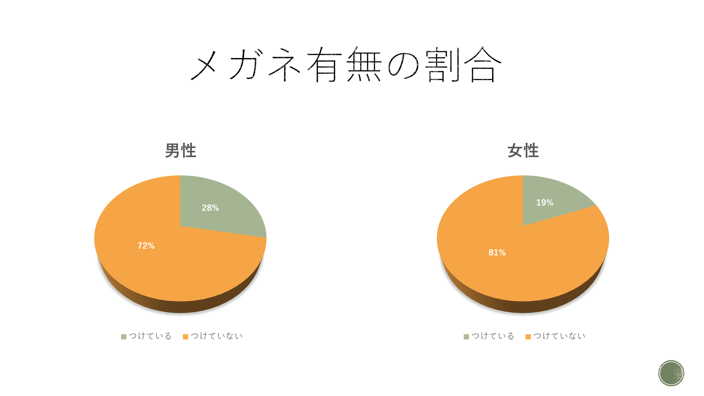
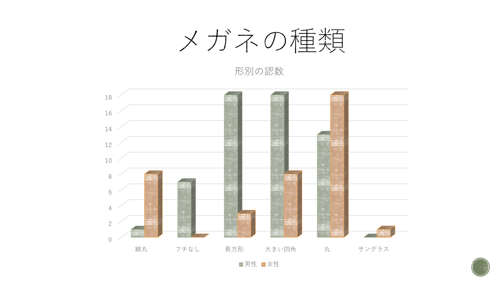

10/19 フィールドワーク
＜観察内容＞
観察対象：メガネ
観察場所：学校内1F~7F・学校周辺・マークイズ前大通り
観察項目：メガネをつけている人・つけていない人の男女別の比率、つけている人のメガネの形状
理由：他の班と対象が被らなさそうだったから。見た目でわかりやすく、判断しやすいため。
＜観察結果＞
①メガネをつけている人・つけていない人を男女それぞれ２００人で調査したところ、以下のような結果になった。
（緑：つけている人 オレンジ：つけていない人）

②「メガネをつけている人」を対象に、つけているメガネの形状・種類を調査したところ以下のような結果になった。
（緑：男性 オレンジ：女性）

＜観察結果から気づいたこと・傾向＞
- 年配の男性はフチなしメガネの人が多かった。
- 女性は年齢関係なく大きい四角や丸メガネをかけている人が多かった。
- 女子大生のメガネ率は低かった
- データから男性より女性の方が欠けているメガネのデザインに偏りがあった。
＜考察＞
メガネの種類に男女で違いがあったのは、（ファッション等の理由もあるが）相手に与えたい印象の違いがメガネの種類に出ているのではないかと考える。
女性が丸いフォルムのメガネをかけている人が多かったのは、「柔らかい印象」を大事にしているからなのではないかと考える。
一方で、男性は長方形のメガネをかけている人が多かったが、それは「誠実な印象」を大事にしている人が多かったからなのではないかと考えた。